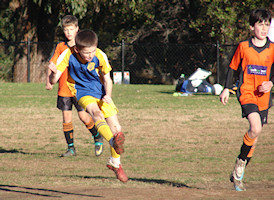
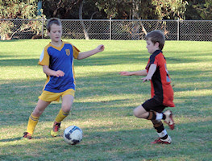

| Match Report - 09 July 2011 |
|
|
|
|
|
|
|
|
U9 Division 3
1 - 0
|
|
Round 14 was the first of our school holiday games and we knew we would be down
on numbers. Unfortunately we were worse than we expected on the day with sickness
and venue problems meaning we were left with only six players against a full
strength (with reserves) Roselea.
The referee tried to call a forfeit on us for being under but I reminded him that
under 9's were permitted to field 6 players rather than the 7 required in higher
grades. He eventually took my word for it and we got under way.
As expected the game was mainly in our half and the boys were run pretty ragged
trying to defend against the extra numbers. Luck for us, they didn't capitalise
on their advantage and kept three of their players on the halfway line for most
of the game. This eased our defensive burden but also made attacking very
difficult. The boys gritted their teeth and at half time had kept them scoreless.
More of the same for the second half but we encouraged the boys to attempt some
long attacking runs with one or two of them running up the field - typically from
half way. This coupled with fantastic covering defence paid off and Darcy managed
to put one away. Not long after Troy got there strengthening our numbers to 7 and
assisting us to keep Roselea scoreless and give the boys a fantastic win.
Luke took the certificate but everyone played excellent and it was a very proud
moment for James and myself.
- Darren Mason (Manager)
|
|
|
|
U11 Division 1
1 - 3
|
|

This was a match which our young North Ryde team will probably prefer to bundle
up and resign to the early-morning-start bin which already contains a few items
from similar games over the past few years. The engine that had been so successful
for the better part of the season so far failed to ignite this morning, and a
sluggish start for the first twenty minutes of the game saw us 3 goals in the red
by the time the half-time whistle blew.
This is not to take away any credit from the North Epping squad, who read the
situation very well and adapted the game to their best advantage. They employed

a thick line of defence that our strikers were unable to penetrate, and a light
yet speedy offensive that left our own line of defence flat-footed and unable to
stop the shots on goal that were coming with increasing and worrying regularity.
The redemption, to some extent, came in the second half of the match. The stiff
bones and muscles from the first half gave way to a free and flowing game in the
second that saw North Ryde return to their winning ways and dominate much of the
remainder of the match. Their confidence had returned and with it came a renewed
vision of the opposition goals. A corner kick found Lachlan in the correct place
and time to take a low and spectacular header that shot into the top of the nets
like a pinball rebounding off a judder bar. Two more long-range shots came
agonisingly close to reducing the deficit further, Charlie's attempt spinning
off the cross-bar and David's shaving the left-hand post. As impressive, however,
were the cool heads and situation awareness that the team showed in working
together to construct opportunities such as these in the first place.
Everyone was working hard to level the scores, and we were perhaps unlucky to
only claw back a single goal in reply to North Epping's three goals in the first
half, but the team can draw solace from a performance which saw them camped near
the North Epping goal line and dominate possession of the ball for the greater
part of the second half.
Well done North Ryde!
- Mark Howard
|
|
|
|
U15 Division 2
1 - 1
|
|
For the eleventh game of the year, with a clear day and an 11:00am start, the
boys played at North Ryde Oval against West Ryde Rovers SC, who is currently
6th in the GHFA competition.
We had a full squad of 15 players which always puts a strain on parents as
there where many substitutions.
They where many highlights, which are below in chronological order:
- The first free kick went to Hayden who placed the ball well and edged out by defender, Ben takes the corner
- Daniel was called off side, noticed the referee was not running around, so he had a few strange decisions
- Cameron was in goals
- Hayden shoots, goalie pushes it out into the side net
- Ben takes corner, Hayden places header outside of goal
- Lewis big cross, goalie edges it out for a corner
- Chris goal clear and up to Daniel, another goal shoot
- Tom jib over goalie. 1-0
- West Ryde Rovers lobe a ball high and in front of the sun, bit high for Cameron. 1-1
- Mitchell flicks the ball up and over and clears it away
- Chris flicks it out of the goal box
- Hayden good steal, pass to Kyle and cleared, throw in to Hayden
- Ben mighty clear from goal box to ½ way
- Harry good clear and chase
- Manav strong header
- In the West Ryde goal box, Luke cleared a shoot back to Daniel who places a big kick! Goalie saves and does not drop it!
Half Time, to this point of the game NRS was in charge but the game score was 1-1.
Paul advises the boys to try to be hungrier for the ball. Then:
- On the side Kevin, Luke, Lewis, Kyle
- Nat big kick, just left of goal
- Alex takes goal kick on with a big header
- Manav shoulders the ball, off West Ryde player, Manav throw in
- Alex left kick to Hayden, then to Tom, goal shoot wide!
- Manav strong header
- Mitchell has a shoot, goalie gets it
- Tom, long corner kick but no one was there
- Harry, the stopper, good push up the middle
- Manav heads it away, Hayden up to Half, Chris all the way, goal shoot just to the LHS.
- Tom, up the LHS kicks long and high, good kick and pressure on goalie
- Chris up to Hayden, Shoot wide!
- Ben throw in, Hayden header, wide
- Cameron still in goals and doing a strong job
- Hayden another good header, just wide of the goals
- Ben takes a mighty shoot, goalie saves it.
- Referee blows the whistle, a scoreless half.
Karen eloquently presented Ben with the player of the match and cup cake, well
done Ben.
The West Ryde Rover goal keeper was a 14/2 boy playing up for the 15/2’s, he
did a perfect job in protecting the goals and retained the game to a draw. A
win here would have placed us at the top of the table.
I would like to thank all the parents who came to support our team... you do
make a loud difference!
- Joe Rosenfels
|
|
|
|
All Age Division 17
5 - 0
|
|
In what was to be the last game of the regular season until the rain washed some
weeks away, North Ryde were paired with the Gladesville Sharks. The season's of
the two teams could not have been more different with the Sharks winning all but
one of their games while North Ryde, despite being quite solid defensively, had
failed to register a win. Form however had little to do with how the match
developed.
The first half started evenly with North Ryde getting the better of early
possession. Gladesville started to link some passes together and were looking
more composed when a quick break and a string of sharp passes released one or
the North Ryde players (Brendan Child) through on goal and a calm finish saw
him put the visiting team ahead. The midfield battle was heating up with the
North Ryde tactic or squeezing players into that space working, ensuring no
time for the home team to put their foot on the ball and control the play.
This pressure again told towards the end of the half with North Ryde getting
their second through Glenn Eatell with another composed finish. The Sharks
were finding it hard to make sense of it all and entered half time behind
by the margin of two goals to nil.
The second half promised to be an edgy affair with North Ryde being asked the
question as to whether they could keep up the intensity for another 45 minutes
while the Sharks knew they had the quality to bridge the deficit. After a few
minutes it was the Sharks who started to dictate play pushing the ball to wide
players trying to get in behind but good tracking from the North Ryde midfield
kept space to a minimum and these raids ended in a loss of possession or a long
range shot to nothing. North Ryde began to string some passes together too and
took on their men to create a scoring opportunity which was foiled by a foul in
the Sharks box resulting in a penalty. Tim Bradey stepped up and calmly slotted
the ball low into the net for a 3-0 lead and the belief grew that there was
definitely an upset on the cards. Despite using their wide outlets again and
again, the Sharks play broke down and it was to be an inspired run by the North
Ryde stopper, Joshua Reader that put the match to rest. Having picked up the ball
in his own half he set off upfield riding challenge after challenge making his
way to the Sharks box where he put in a perfectly weighted cross with Matthew
Rose finished off for a 4-0 lead. The Gladesville heads dropped and there was
only one result from that moment on. North Ryde won another penalty from the
spot which wrapped up the scoring, Dan Childs putting the Ball with power above
the helpless Gladesville keeper. 5-0... a great and deserved result.
The Sharks were missing the composure that lead them to a win in the match
earlier in the season and perhaps a player or two also as they just struggled
to get to grips with the game. Their lumbering back four were exposed as the
match went on and they will need to address some of the deficiencies highlighted
in this game if they are to take out the minor premiership and post season cup.
As for North Ryde, well the question remains as to whether a corner has been
turned. They did not play especially differently in this match to how they have
over the past few weeks but if anything were a little more committed for the full
90 minutes, not letting the game get away from them for periods as has happened
throughout the season to date. The next three weeks sees them take on teams in
and around them on the lower half of the table so it will be a good indicator as
to whether this performance was an exception or if it becomes the rule. The jury
is out.
- Simon
|